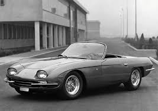

Manufacturing magnate Italian Ferruccio Lamborghini founded the company in 1963 with the objective of producing a refined grand touring car to compete with offerings from established marques such as Ferrari. The company's first models, such as the 350 GT, were released in the mid-1960s. Lamborghini was noted for the 1966 Miura sports coupé, which used a rear mid-engine, rear-wheel drive layout. In 1963, Ferruccio Lamborghini, already an established industrialist who manufactured tractors, boilers, and air conditioners, founded Lamborghini Automobili on May 7, 1963.[5]
